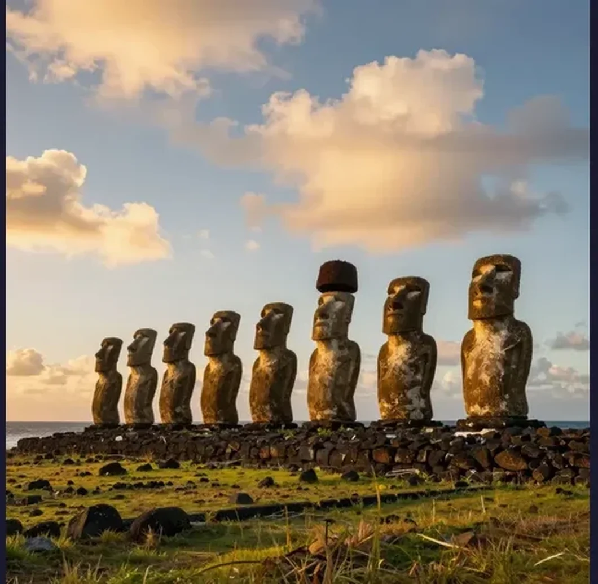

The Moai of Easter Island: How Did the Rapa Nui Move About 900 Giant Stone Statues?

It was Easter Sunday, April 5, 1722. A Dutch navigator named Jacob Roggeveen and his crew saw a low, treeless island in the Pacific Ocean. It was one of the most remote places on Earth where people lived. It lay more than 3,500 kilometers from the coast of Chile and about 2,000 kilometers from the nearest inhabited island.
The sailors found many huge stone statues. Most of the statues stood on stone platforms around the edge of the island. They looked inland, with their backs to the sea. The local people, the Rapa Nui, called the statues moai.
The moai were enormous. They averaged 4 meters tall and weighed 12.5 tons. Most were carved from volcanic tuff, a stone made of squeezed volcanic ash. They had long heads, serious faces, and long fingers resting near the waist. Some wore giant round hats of red stone.
The people who met Roggeveen’s ships numbered perhaps 2,000 to 3,000. They lived on land with very few trees. They had no wheels and no work animals. How had they made such huge works?
That question has followed every visitor since. How did a small, cut-off people carve, move, and raise about 900 giant statues without modern tools? It is a story of great skill and great pride. It is also a story of reverence for ancestors and of damage to nature.
Easter Island is called Rapa Nui by its people. Some people say an older name is Te Pito o te Henua, which they translate as “the navel of the world.” Scholars disagree about that meaning. It is a small, triangular volcanic island of only 163 square kilometers.
Polynesian sailors reached it long ago. Newer studies say about 1200 CE, but older guesses go back much earlier. They crossed thousands of miles of open ocean in canoes. Over the next centuries, they built a complex society. It left behind some of the most remarkable monuments of the ancient world.
Later, the forests were cut down and the statues were toppled. The number of people dropped. By the 1860s, almost every statue on a platform had fallen. Many have been raised again in modern times. Their story is one that we are only now beginning to understand.
The moai are solid figures of human shape. They were cut from volcanic tuff on the slopes of Rano Raraku, an extinct volcano on the east side of the island. Archaeologists have counted about 900 of them. They are people who study the past by digging up old things.
The average moai is about 4 meters (13 feet) tall and weighs 12.5 tons. But sizes vary a great deal. The tallest one ever raised is called Paro. It stands nearly 10 meters (33 feet) tall and weighs about 82 tons.
The largest one ever carved is called El Gigante. It would be about 21 meters (69 feet) tall if finished. It may weigh 145 to 165 tons. It was never taken out of the quarry. It is still attached to the rock, stopped in the middle of its carving, as if its makers simply walked away.
The carving itself was a great feat. Sculptors carved each moai lying on its back, straight out of the volcanic rock. They used hand-held stone tools called toki. Experts think the statue was cut free from the rock only when the carving was almost done.
Then the statue was moved down the slope. It was stood upright in a deep hole, where the back and base may have been finished. Nearly 400 unfinished moai remain at Rano Raraku. Some are still joined to the rock. It looks as if the quarry was left in a single moment. Why the work stopped is still argued about.
The size of the whole project is hard to imagine. Nearly half of the statues are still at the quarry, and many are unfinished. Hundreds were moved and raised on platforms along the coast. Some lie along old roads between the quarry and the platforms they were meant for.
The platforms are called ahu. Many moai once wore pukao, which are round “hats” of red stone. The red stone came from a different place, called Puna Pau. The hats may have stood for the topknots of hair that important people wore.
Most moai face inland, not out to sea. Many scholars think they watched over the villages and stood for ancestors who had become sacred.
How did the Rapa Nui move statues of many tons over many kilometers? They had no wheels, no horses or cattle, and, by the time Europeans came, almost no trees. This puzzle has caused more argument than almost any other in Polynesian archaeology.
The islanders’ own stories give a clue. They said the statues “walked” to their platforms. For centuries, people laughed at this as a myth. Then modern science began to take it seriously.
One leading idea is the “walking” theory. Archaeologists Terry Hunt and Carl Lipo proposed it, and experiments support it. Teams of people pulled on ropes tied to the head and base of an upright statue. They rocked it from side to side so that it stepped forward.
In an experiment, a team of 18 people “walked” a copy of a moai that weighed about 4 tons for 100 meters in 40 minutes. A study from 2025 in the Journal of Archaeological Science looked at the statues along the old roads. Their bases are wide and D-shaped, and the statues lean forward. Hunt and Lipo say this fits a rocking walk. Other experts say the tests show that walking was possible, but they do not prove it happened.
Other ideas exist too. The sledge and rail theory says moai were laid on wooden sledges. They were dragged over wooden rails or a bed of small round stones. But that needs a lot of wood, and wood became scarce as the trees disappeared.
The lever and pivot theory was tested by the team of the Norwegian explorer Thor Heyerdahl in 1986. They used 8 and 16 workers to move copies that weighed 5 and 9 tons. Some think this method is too slow to explain how so many statues were moved.
One of the most haunting places on the island is the inside slope of Rano Raraku. It is the volcano crater where almost all the moai were carved. There, nearly 400 statues wait in different stages. Some are barely roughed out of the rock. Others are finished and ready to move. Others lie on the slopes just where they were left.
The quarry is a picture of a people at work, and at the moment they stopped. The marks from the stone chisels can still be seen.
Most moai were carved between about 1250 and 1500 CE.
The story of what happened to the island’s society is hotly debated. The older account was made famous by Jared Diamond in his 2005 book Collapse. It says the Rapa Nui cut down their own forests. They needed wood to move the moai, to fuel cooking fires, and to make fields.
Studies of pollen suggest that the island was once covered with a thick forest of giant palm trees. That palm is now extinct. By the time Europeans arrived in 1722, almost no trees were left. In this account, the soil washed away and people ran short of firewood.
The account also says the population was perhaps between 6,000 and 15,000 at its peak. But newer studies suggest only about 3,000 people at most. Oral traditions tell of wars between clans, and some say moai were knocked down on purpose. But one expert, Mike Pitts, says nothing shows the statues were pushed over. By 1877, only 111 people lived on the island.
Later research has made this story more complicated. Some researchers say the Polynesian rat played a big part. It came with the first settlers. It ate palm seeds, so new trees could not grow.
Others say the “collapse” story ignores how strong and clever the Rapa Nui were. They developed clever ways to farm, including lithic mulching. That means covering the soil with stones to keep it moist. Some researchers say the people adapted well, and that the real damage came later, from disease and slave raids. Most agree on one thing. By the 18th century, the forests were gone, and the island had changed forever.
As the old ways changed, a new religion took its place. It centered on a contest called the Tangata Manu, or Birdman. Each year, chiefs and their swimmers gathered at Orongo. This was a ceremonial village on the rim of the Rano Kau crater, high above the sea.
In the contest, a swimmer crossed the sea to a small islet called Motu Nui. Many swimmers were hurt or died. He had to bring back the first egg laid by the sooty tern, a seabird, that season. The man whose swimmer won became the Birdman. It brought great honor.
This was a big change. Before, people had honored ancestors carved in stone. Now they honored a spirit of new life, linked to the return of the seabirds. Carvings at Orongo show the Birdman as a human body with a bird’s head. They are cut into the volcanic rock. The contest ended in the 1860s, when Christian missionaries stopped it.
Another great puzzle is the rongorongo script. It is a set of signs cut into wooden tablets. If it is writing, it may be one of the very few times that people invented writing on their own. The signs show human figures, animals, plants, and shapes. The lines are read in a special way, called reverse boustrophedon. You read one line from left to right. Then you turn the tablet around and read the next line the same way.
About 26 objects with rongorongo are accepted today. Nobody can read them. The people who could read it were probably killed or lost to slave raids and disease in the 1860s.
Is it true writing, which records spoken language? Or is it proto-writing, which records ideas without grammar? Most experts now say it is proto-writing. Some think European visits may have inspired it. Others disagree.
The arrival of Europeans brought disaster, not progress. In 1862 and 1863, slave raiders from Peru kidnapped about 1,500 Rapa Nui. They were forced to work on farms and in guano mines in Peru. Guano is bird droppings, used as fertilizer. Many of the captives died.
Under pressure, a few survivors came home. By one count, only about a dozen did. They brought smallpox with them, and it hurt the island even more. By 1877, only 111 Rapa Nui remained.
Much was lost, including the skill of reading rongorongo, the Birdman traditions, and much of the story of the moai-building age. Chile took over the island in 1888. Most Rapa Nui were kept in the village of Hanga Roa for decades, until the 1950s or 1960s. About 7,750 people live on the island today, and their culture is being revived. But the losses of the 19th century can never be undone.
Easter Island is often used as an example of how a society can fail. One people lived alone on one of the most remote islands on Earth. They built a remarkable civilization. Some scholars say they harmed their own land. Others say that outsiders did the most harm.
The moai were their greatest achievement. Some scholars think the drive that made about 900 giant statues also used up the forests. By 1877, only 111 people remained.
What was the main cause? Cutting trees to move the moai, rats eating palm seeds, too many people, a changing climate, disease and slave raids, or all of these together? Nobody can say for sure. Some people draw a lesson from it. Civilizations do not last forever, and they can be fragile.
Many moai have been raised again in modern times. They stand on their platforms, staring inland. They are the ancestors of the Rapa Nui, frozen in stone. They watch over a land their descendants changed beyond recognition.
For many people, they are also a warning. Every resource has an end. The story of Easter Island is a mystery from the past. It may also be a lesson for the future.
References & Further Reading
Wikipedia: Moai — Size, weight, quarry, pukao, toppling by 1868, dates, Heyerdahl tests
📚 Recommended Reading: Rapa Nui--Easter Island by Jo Anne Van Tilburg (on Amazon) — As an Amazon Associate, we earn from qualifying purchases.
Editorial note: The moai are real, and most were carved between about 1250 and 1500 CE. Experts still argue about how they were moved, why the island's society declined, and whether rongorongo is true writing. See our Editorial Policy.